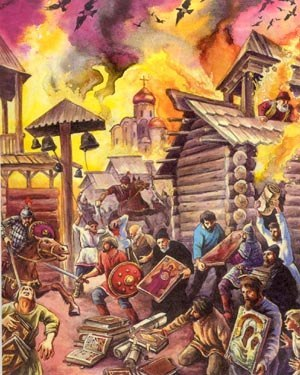

В прошлом выпуске Мамай погиб, Тохтамыш воцарился в Сарае и начал водить жалом на предмет, на кого б наехать в очередной раз, а Дмитрий Донской на радостях после победы немедленно дал ему повод.
И все завертелось...
Первой, как это издревле повелось, огребла Волжская Булгария. Почему-то большая часть стычек Руси и Орды начиналась именно с бодрой раздачи булгарам. Знойным летом 1382-го Тохтамыш привел свои полки в Булгарию, перерезал всех сопротивлявшихся, деньги и товары отнял, корабли захватил и на них же переправился через Волгу. В силу географических причин и большого личного невезения, на пути татар стояло рязанское княжество и лично князь Олег, который два года до того униженно кланялся Донскому и обещал не повторять ошибок прошлого. Однако, увидев монгольские полки, Олежка немедленно понесся на поклон к Тохтамышу, умильно виляя хвостиком — показывать секретные броды через Оку. Взамен хан милостиво позволил князю не паковать пожитки и обошел Рязань стороной.

Дима же, не помышляя о таких поворотах судьбы, продолжал развлекаться в Москве. Внезапное известие от русских шпионов в Орде, что "к нам едет ревизор" было как гром с ясного неба. В Москве немедленно началась паника. Донской попробовал было собрать хоть какие-то силы, но на составление нормальной армии нужно время, которого не хватало. Поэтому Дмитрий отступил на перегруппировку в Коломну, оставив Москву и заслав доверенного князя Владимира Андреевича по прозвищу Храбрый в город с замечательным названием Волок Ламский (читатели могут догадаться, как же это место называется теперь).
Тохтамыш тем временем пер на север в своих лучших традициях, разнося все на пути. К концу августа он был уже под стенами Москвы. В городе к тому времени уже успели прозойти и народные забавы "стенка на стенку", и грабежи богатых домов, и массовые эвакуации, и поголовное пьянство, и многочисленные молебны. Когда народ несколько притомился от такого активного образа жизни, в столицу приехал весьма удачно объявившийся литовский князь Остей, который нашел, чем занять жителей - поэтому доехавший хан видел уже готовый к обороне город.
Штурм длился два дня. Атакующие и обороняющиеся применяли все известные на тот момент виды вооружений — вплоть до огнестрельного. Некий безымянный ордынский вельможа, отличавшийся повышенной везучестью, поймал головой стрелу от одного из защитников Москвы. В летописях говорится, что Тохтамыш был весьма недоволен такой расторопностью подчиненного.
Поняв, что головастых вельмож на москвичей не напасешься, хан пошел на хитрость. Вытащив из закромов удачно схваченных до того сыновей суздальского князя, он отпустил их к воротам, велев вешать на уши лапшу, да побольше. Те справились с заданием. Москвичи, поверив, что Тохтамыш лично против них ничего не имеет, а пришел сугубо за Димой, открыли ворота и высыпали торжественно приветствовать монгол.
Благодаря этому потрясающему по силе интеллекта поступку людей в Москве почти не осталось, а ценностей не осталось совсем. Татары изничтожили и утащили все, до чего смогли дотянуться, а остальное просто сожгли.
После разорения Москвы монголы начали было грабить окрестности. Однако встретив около Волока Ламского войско того самого Владимира Храброго и получив по башке, как-то засмущались, и начали собираться домой — Тохтамыш внезапно вспомнил, что Дима все-таки Мамаю навешал, а сейчас может подойти с новыми силами, и решил вовремя смотаться с награбленным.
На обратном пути хану повстречалась Рязань. Глумливо ухмыляясь, Тохтамыш разорил и ее, так что дипломатический демарш Олега пропал втуне, а в итоге и вышел ему боком. Потому что на кого пошел Дмитрий, как только вернулся в Москву и навел справки о том, как именно Тохтамыш перешел Оку? Вот именно.
В 1382-ом году Москва была разорена, Дмитрий понял, что наглеть и полностью плевать на Орду нельзя, Тохтамыш убедился, что во всем обозримом пространстве нет никого круче, а Олег Рязанский осознал, что пришла пора вешаться.
Что из этого вышло дальше? Об этом — в следующем выпуске.